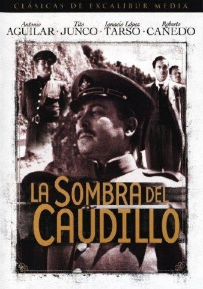

La Sombra del Caudillo (Julio Bracho, 1960)
Aunque padece de algunos problemas de montaje, el retrato sobre la seducción del poder y la caída de los viejos caudillos en el sistema burocrático se convierte en una oda triste a la memoria del conflicto armado en la transición de la figura del “General” en el político. El mismo periodista, historiador y diplomático Martin Luis Guzmán adapta su propia obra bajo ese romanticismo que lo sitúa como uno de los pioneros de la novela revolucionaria, dejando que la gestión administrativa apague gradualmente la honorabilidad de los “héroes” en un México transitorio, precediendo así la crítica fílmico política que en aquellos tiempos se acentuaba con la libertad de expresión bajo el régimen presidencial de Adolfo López Mateos.

Nosotros, los pobres (Ismael Rodríguez, 1948)
La fábula de la desgracia, Ismael Rodríguez regresa en el ranking para construir el homenaje hacia el pobre, hacia al arrabal, hacia la vecindad. No cabe duda de la influencia melodramática hacia las consecuentes telenovelas, formato que desbarataría la complejidad de una obra que íntima con la desdicha de manera alucinante, casi extravagante, casi irreal.

Los Hermanos del Hierro (Ismael Rodríguez, 1961)
El western mexicano es salvaje, es revolucionario, es musical, en ranchero, es Antonio Aguilar luchando contra su hermano por el amor de la joven Jacinta, una hermandad que fue forjada a raíz de la violencia, de un silbido y del asesinato de su padre, y posteriormente alimentada por la sed de venganza de su madre, la enseñanza de un pistolero y la conducta sanguinaria desatada por el menor de los Hierro. Un western complejo, sádico y romántico, que puede equipararse sin problema a las piezas europeas o estadounidenses y que en su innovación hacía con la idiosincrasia mexicana, trasgrede a la figura de la madre para situarla como villana, haciendo que esta ágil y desembocada cacería termine en una previsible pero genial y metafórica tragedia.
Cronos (Guillermo del Toro, 1993)
Por algún momento el cine mexicano vio en un regordete y talentoso cineasta tapatío, revivir las viejas glorias de la fantasía mexicana, pero ahora con la calidad y complejidad narrativa suficientes para hacerse premios de Cannes y Sitges. El recién ganador de Venecia se estrenaba con un film que parecía un engendro esplendoroso entre el terror alemán de los 20’s y la cultura mexicana. En sus barrios y anticuaros, en la lúgubre noche de la Ciudad de México, el terror y la fantasía resurgían con una brillante simpleza y originalidad, en una amalgama de corrientes, estilos y talento actoral gringo, español y mexicano que se regodeaban en esta revitalización del mito vampírico. A todos parece habérseles olvidado que Del Toro dio su mejor película en su debut.
Ahí está el detalle (Juan Bustillo Oro, 1940)
El clímax del Cantinflismo, monumento a un único e inigualable estilo humorístico basado en la espontaneidad y la agilidad oral, alabada de manera internacional e incluso aceptada por la Real Academia de la Lengua. Fue tanta su influencia y poder que el personaje “Cantinflas” trascendería fronteras posicionándose como el icono de la comedia a un nivel continental. Con un reparto que incluye a Sara García y a un brillante Joaquín Pardavé, Bustillo Oro se confiere al control total de Mario Moreno para exponer una deliciosamente original fábula de accidentales identidades que surten un efecto soñado y grandilocuente en el tremendo acto final en una sala de jurado, confinamiento donde quizá se ha dado el mayor ejemplo de la comicidad e ingenio mexicanos.
Enamorada (Emilio Fernández,1946)
En tiempos de la revolución, las tropas zapatistas del general José Juan Reyes (Pedro Armendáriz) toman la tranquila y conservadora ciudad de Cholula. Mientras confisca los bienes de los ricos del pueblo, el general Reyes se enamora de la bella, rica e indomable Beatriz Peñafiel (María Félix), hija del hombre más notable de Cholula. El desprecio inicial que Beatriz siente hacia el revolucionario da paso a la curiosidad y, finalmente, a un profundo y auténtico amor.
El padrecito (Miguel M. Delgado,1964)
Al pueblo mexicano de San Jerónimo el Alto llega el Padre Sebastián, enviado a ayudar al anciano Padre Damián en sus funciones sacerdotales. El padre 'Sebas' choca con la oligarquía del pueblo al intentar reabrir la escuela (cerrada para instalar una cantina), y con la hermana del padre Damián, convencida de que sólo viene a quitarle el trabajo a su hermano. El pueblo comienza a encariñarse del nuevo padre, creándose muchas situaciones jocosas.
La trama es llevada a cabo en el típico pueblo dominado por un cacique quien no quiere que los habitantes se le rebelen. El padre 'Sebas' no está dispuesto a consentir que el pueblo y su mismo superior el padre Damián sigan en la completa sumisión ante Don Silvestre. El padre Sebas se mete en todo, desde jugar a los dados, hasta torear.